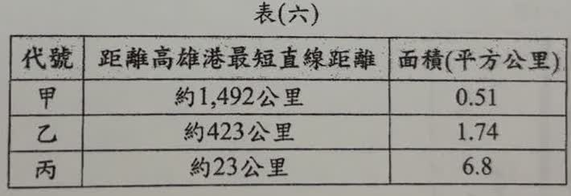
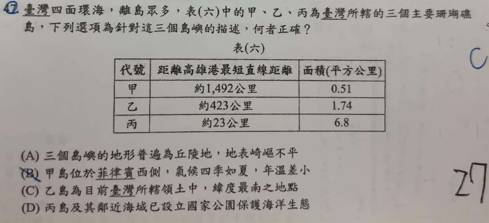

分享原卷｜第 47 題
完整原題
| 代號 | 距離高雄港最短直線距離 | 面積（平方公里） |
|---|---|---|
| 甲 | 約1,492公里 | 0.51 |
| 乙 | 約423公里 | 1.74 |
| 丙 | 約23公里 | 6.8 |

臺灣四面環海，離島眾多，表（六）中的甲、乙、丙為臺灣所轄的三個主要珊瑚礁島，下列選項為針對這三個島嶼的描述，何者正確？
(A) 三個島嶼的地形普遍為丘陵地，地表崎嶇不平
(B) 甲島位於菲律賓西側，氣候四季如夏，年溫差小
(C) 乙島為目前臺灣所轄領土中，緯度最南之地點
(D) 丙島及其鄰近海域已設立國家公園保護海洋生態
先想一想，再查看答案、解說與原圖
原卷作答：原卷藍筆D，紅筆訂為B
正確答案：B。甲為太平島，位在菲律賓巴拉望島西側的低緯度南海，符合終年高溫、年溫差較小。
逐項解析
| 選項與原句 | 判讀 | 句意與判斷理由 |
|---|---|---|
| (A) 三個島嶼的地形普遍為丘陵地，地表崎嶇不平 | 不選 | 太平島、東沙島地勢低平，不能把三者一概說成崎嶇丘陵。 |
| (B) 甲島位於菲律賓西側，氣候四季如夏，年溫差小 | 應選 | 甲為太平島，位在菲律賓巴拉望島西側的低緯度南海，符合終年高溫、年溫差較小。 |
| (C) 乙島為目前臺灣所轄領土中，緯度最南之地點 | 不選 | 乙為東沙島，甲太平島比它更南。 |
| (D) 丙島及其鄰近海域已設立國家公園保護海洋生態 | 不選 | 丙為小琉球，國家風景區與國家公園不可混稱；本題原卷所述不符。 |
詳細說明與解題步驟
先用距離及面積組合辨島：甲距高雄最遠、面積約0.51平方公里，為太平島；乙約423公里、1.74平方公里，為東沙島；丙約23公里、6.8平方公里，為小琉球。原表數值照題圖保留，不拿別種測量口徑改寫。
太平島位於低緯度南海，在菲律賓巴拉望島西側，全年溫暖、年溫差較小，因此B正確。A把三島地形概括成崎嶇丘陵不對；C把東沙當成最南不對；D混淆小琉球所屬觀光區域與國家公園。
此題的「所轄」按題目實際管理的島嶼判讀，不由此推成所有南海群島都由臺灣實際管轄。參考：[行政院國情簡介〈土地〉](https://www.ey.gov.tw/state/4447F4A951A1EC45/094b1d53-de8d-4393-bde6-ab092969cce4)、[環境部太平島背景介紹](https://airtw.moenv.gov.tw/CHT/EnvMonitoring/Background/BackgroundIntro.aspx)。
核對註記：已核對題幹、全部選項與必要材料；教材對應課次未確認，歸綜合。
原圖（僅本題）
